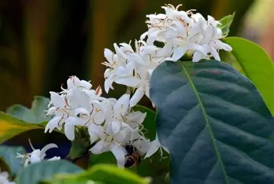
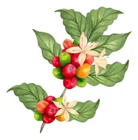

Tiempo de Maduración: De la Flor al café
El "reloj" que marca el inicio de la cosecha comienza a correr desde la floración. El tiempo que tarda una flor en convertirse en un café maduro y listo para recolectar varía según la especie:
•Café Arábica: El período de maduración es de aproximadamente 6 a 8 meses después de la floración. Otras fuentes amplían este rango a 7 u 9 meses.
•Café Robusta: Suele necesitar un poco más de tiempo, entre 8 y 11 meses desde la floración para alcanzar la madurez.


¿Cómo se Determina el Momento Exacto?
El indicador visual definitivo para saber que un café está en su punto óptimo es su color. El café pasa de verde a un color rojo intenso (o amarillo, según la variedad) cuando está maduro.
Dado que el café de un mismo arbusto no madura todo al mismo tiempo, la práctica recomendada es la cosecha selectiva. Esto significa recolectar manualmente, en varias "pasadas", solo los frutos que presentan el color de madurez óptimo, dejando los verdes para más adelante. Este método, aunque laborioso, garantiza una mayor calidad en la taza.